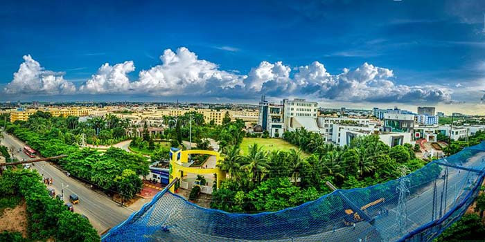
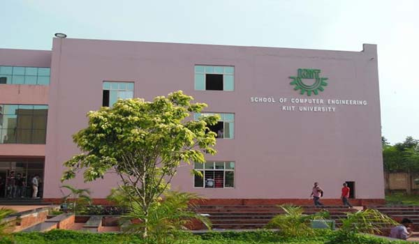

About Kiit University

KIIT is a multi-disciplinary University respected worldwide due to its rich educational culture of excellence. Research and innovation feed into the courses, encouraging the students to think critically and creatively. Its cosmopolitan
campus is proud to have more than 25,000 students from all corners of India and around 22 countries, creating a mini metropolis in which a diverse multi-cultural community mingles and meets to study and relax together. Student community of the University
is highly disciplined due to its student friendly policies. KIIT University sprawls over 25 sq. km. area with one million square metres of aesthetically constructed built up area. There are 28 constituent schools, contiguously located in impeccably
landscaped and modern-technology-enabled campuses offering graduate, post-graduate, doctoral and post-doctoral programmes in a wide range of disciplines. The institute’s solemn academic ambience has led to grant of A-Category status to it by the Ministry
of HRD, Govt. of India, placing it among the most elite universities of the country. It is accredited by NAAC of UGC in 'A Grade' Further, it has received Tier 1 (Washington Accord) accreditation by NBA of AICTE for engineering streams. Washington
Accord accreditation enables global recognition of degrees of the University and increased mobility of its graduates to 17 countries, including USA, UK, Australia, Canada and Japan. KIIT University is among only six institutions in the country to
have this accreditation. KIIT also has one industrial training institute, a polytechnic, and an international school having affiliations with IGCSE-England, International Baccalaureate Programme (IBP), and CBSE India - the only one of its kind in
the whole of the Eastern India.
About school of computer science
 The School of Computer Engineering aims to impart cutting-edge skills through research and development, industrial consultancy, in frontier areas of Computer and Information Technology and
teaching. The state-of-the-art facilities of the School include adequate number of air conditioned classrooms, laboratories, conference hall, reading rooms and round the clock Library with Journals, e-resources and around 13000 books. The well qualified
faculty members of the School endeavor to impart understanding of fundamental concepts, with a view to laying a strong foundation to help assimilate continual changes in the dynamic field; train in current technologies to be employable in the industry;
train to connect theory with application; develop analytical; problem solving and product design skills; motivate to take up careers in research and development as well as in academics and develop entrepreneurship abilities with a view to becoming
self reliant. Besides conducting high quality, innovative and continually updated UG and PG courses, the School is engaged in research in frontier areas. Research interests include Algorithms & Theory of Computation, Artificial Intelligence, Bioinformatics,
Cloud Computing, Database & Data Mining, Data Analytics, Human Computer Interaction, Information & Network Security, Internet Technology, Image Processing, Mobile Computing, Pattern Recognition, Program Analysis and Testing, Parallel & Distributed
Computing, Real Time Systems, Service-Oriented Architecture, Soft Computing, Software Engineering, Wireless Sensor Networks. A number of conferences, workshop, symposium, invited talks etc has been organized by the school. From last 13 years International
Conference on Distributed Computing and Internet Technology (ICDCIT), published by Springer in the series of Lecture Notes in Computer Science has been organized at the school. Some Key conferences organized by school are 3rd International Conference
on Advanced Computing, Networking, and Informatics (ICACNI 2015), Springer, IEEE Conference on Computer Graphics, Vision and Information Security(ICGVIP 2015), 2nd International conference on Computational Intelligence and Network (CINE) 2016, 5th
International Conference on Frontiers of Intelligent Computing: Theory and applications (FICTA) 2016.
© Copyrights ICCAN. All Rights Reserved
>